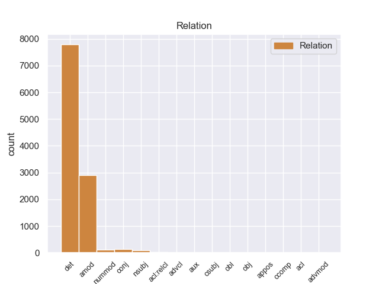
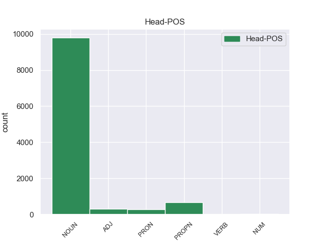
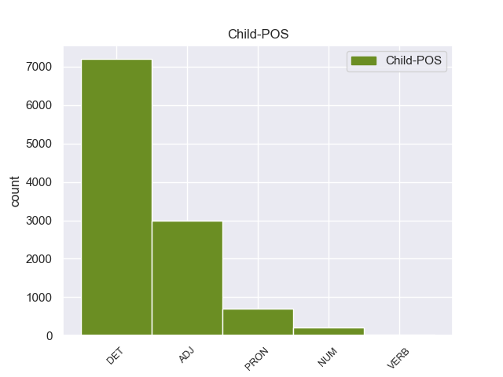

Distribution of features within this leaf



Agreement Rules sorted by frequency.
- When the dependent token is the determiner(det) of the head token, and the dependent token is DET.
1 Σκιάθος _ _ _ _ 0 _ _ _
2 - _ _ _ _ 0 _ _ _
3 Η ο DET DET Case=Nom|Definite=Def|Gender=Fem|Number=Sing|PronType=Art 5 det _ _
4 Ιερά _ _ _ _ 0 _ _ _
5 Μονή μονή NOUN NOUN Case=Nom|Gender=Fem|Number=Sing 0 _ _ _
6 Ευαγγελίστριας _ _ _ _ 0 _ _ _
7 . _ _ _ _ 0 _ _ _
1 Σκιάθος _ _ _ _ 0 _ _ _
2 - _ _ _ _ 0 _ _ _
3 Η _ _ _ _ 0 _ _ _
4 Ιερά ιερός ADJ ADJ Case=Nom|Gender=Fem|Number=Sing 5 amod _ _
5 Μονή μονή NOUN NOUN Case=Nom|Gender=Fem|Number=Sing 0 _ _ _
6 Ευαγγελίστριας _ _ _ _ 0 _ _ _
7 . _ _ _ _ 0 _ _ _
1 Επιτρέψτε _ _ _ _ 0 _ _ _
2 μου _ _ _ _ 0 _ _ _
3 τώρα _ _ _ _ 0 _ _ _
4 να _ _ _ _ 0 _ _ _
5 κάνω _ _ _ _ 0 _ _ _
6 μερικές _ _ _ _ 0 _ _ _
7 παρατηρήσεις _ _ _ _ 0 _ _ _
8 σ _ _ _ _ 0 _ _ _
9 το _ _ _ _ 0 _ _ _
10 ζήτημα _ _ _ _ 0 _ _ _
11 της _ _ _ _ 0 _ _ _
12 δήλωσης _ _ _ _ 0 _ _ _
13 αξιοπιστίας _ _ _ _ 0 _ _ _
14 καθότι _ _ _ _ 0 _ _ _
15 το _ _ _ _ 0 _ _ _
16 ζήτημα ζήτημα NOUN NOUN Case=Nom|Gender=Neut|Number=Sing 0 _ _ _
17 αυτό αυτός PRON PRON Case=Nom|Gender=Neut|Number=Sing|Person=3|PronType=Dem 16 det _ _
18 αναφέρεται _ _ _ _ 0 _ _ _
19 σ _ _ _ _ 0 _ _ _
20 την _ _ _ _ 0 _ _ _
21 έκθεση _ _ _ _ 0 _ _ _
22 παρακολούθησης _ _ _ _ 0 _ _ _
23 . _ _ _ _ 0 _ _ _
1 Εδώ _ _ _ _ 0 _ _ _
2 και _ _ _ _ 0 _ _ _
3 ενάμισι ενάμισης NUM NUM Case=Acc|Gender=Masc|Number=Sing|NumType=Card 4 nummod _ _
4 χρόνο χρόνος NOUN NOUN Case=Acc|Gender=Masc|Number=Sing 0 _ _ _
5 επισημαίνω _ _ _ _ 0 _ _ _
6 εδώ _ _ _ _ 0 _ _ _
7 σ _ _ _ _ 0 _ _ _
8 το _ _ _ _ 0 _ _ _
9 Κοινοβούλιο _ _ _ _ 0 _ _ _
10 ότι _ _ _ _ 0 _ _ _
11 δεν _ _ _ _ 0 _ _ _
12 μπορούμε _ _ _ _ 0 _ _ _
13 πια _ _ _ _ 0 _ _ _
14 να _ _ _ _ 0 _ _ _
15 χρησιμοποιούμε _ _ _ _ 0 _ _ _
16 την _ _ _ _ 0 _ _ _
17 έκφραση _ _ _ _ 0 _ _ _
18 ειρηνευτικές _ _ _ _ 0 _ _ _
19 διαδικασίες _ _ _ _ 0 _ _ _
20 σε _ _ _ _ 0 _ _ _
21 αυτά _ _ _ _ 0 _ _ _
22 τα _ _ _ _ 0 _ _ _
23 συμφραζόμενα _ _ _ _ 0 _ _ _
24 . _ _ _ _ 0 _ _ _
1 Σύμφωνα _ _ _ _ 0 _ _ _
2 με _ _ _ _ 0 _ _ _
3 τον _ _ _ _ 0 _ _ _
4 εκπρόσωπο _ _ _ _ 0 _ _ _
5 τύπου _ _ _ _ 0 _ _ _
6 του _ _ _ _ 0 _ _ _
7 Λευκού _ _ _ _ 0 _ _ _
8 Οίκου _ _ _ _ 0 _ _ _
9 Josh _ _ _ _ 0 _ _ _
10 Earnest _ _ _ _ 0 _ _ _
11 , _ _ _ _ 0 _ _ _
12 οι _ _ _ _ 0 _ _ _
13 Ηνωμένες _ _ _ _ 0 _ _ _
14 Πολιτείες _ _ _ _ 0 _ _ _
15 είναι _ _ _ _ 0 _ _ _
16 ανοιχτές _ _ _ _ 0 _ _ _
17 σε _ _ _ _ 0 _ _ _
18 αξιόπιστες αξιόπιστος ADJ ADJ Case=Nom|Gender=Fem|Number=Plur 0 _ _ _
19 και _ _ _ _ 0 _ _ _
20 γνήσιες γνήσιος ADJ ADJ Case=Nom|Gender=Fem|Number=Plur 18 conj _ _
21 διαπραγματεύσεις _ _ _ _ 0 _ _ _
22 . _ _ _ _ 0 _ _ _
1 Θα _ _ _ _ 0 _ _ _
2 ήθελα _ _ _ _ 0 _ _ _
3 να _ _ _ _ 0 _ _ _
4 επιστήσω _ _ _ _ 0 _ _ _
5 την _ _ _ _ 0 _ _ _
6 προσοχή _ _ _ _ 0 _ _ _
7 όλων _ _ _ _ 0 _ _ _
8 των _ _ _ _ 0 _ _ _
9 συναδέλφων _ _ _ _ 0 _ _ _
10 σ _ _ _ _ 0 _ _ _
11 το _ _ _ _ 0 _ _ _
12 γεγονός _ _ _ _ 0 _ _ _
13 ότι _ _ _ _ 0 _ _ _
14 , _ _ _ _ 0 _ _ _
15 εάν _ _ _ _ 0 _ _ _
16 υπάρχουν _ _ _ _ 0 _ _ _
17 κάποιες _ _ _ _ 0 _ _ _
18 ελευθερίες _ _ _ _ 0 _ _ _
19 οι _ _ _ _ 0 _ _ _
20 οποίες _ _ _ _ 0 _ _ _
21 είναι _ _ _ _ 0 _ _ _
22 ζωτικής _ _ _ _ 0 _ _ _
23 σημασίας _ _ _ _ 0 _ _ _
24 για _ _ _ _ 0 _ _ _
25 την _ _ _ _ 0 _ _ _
26 άσκηση _ _ _ _ 0 _ _ _
27 του _ _ _ _ 0 _ _ _
28 λειτουργήματος _ _ _ _ 0 _ _ _
29 της _ _ _ _ 0 _ _ _
30 δημόσιας _ _ _ _ 0 _ _ _
31 εκπροσώπησης _ _ _ _ 0 _ _ _
32 , _ _ _ _ 0 _ _ _
33 ιδίως _ _ _ _ 0 _ _ _
34 για _ _ _ _ 0 _ _ _
35 ένα _ _ _ _ 0 _ _ _
36 Κοινοβούλιο _ _ _ _ 0 _ _ _
37 σαν _ _ _ _ 0 _ _ _
38 το _ _ _ _ 0 _ _ _
39 δικό _ _ _ _ 0 _ _ _
40 μας _ _ _ _ 0 _ _ _
41 , _ _ _ _ 0 _ _ _
42 η _ _ _ _ 0 _ _ _
43 ελευθερία _ _ _ _ 0 _ _ _
44 της _ _ _ _ 0 _ _ _
45 επικοινωνίας _ _ _ _ 0 _ _ _
46 με _ _ _ _ 0 _ _ _
47 άλλους _ _ _ _ 0 _ _ _
48 πολίτες _ _ _ _ 0 _ _ _
49 και _ _ _ _ 0 _ _ _
50 με _ _ _ _ 0 _ _ _
51 τους _ _ _ _ 0 _ _ _
52 πολίτες _ _ _ _ 0 _ _ _
53 τρίτων τρίτος NUM NUM Case=Gen|Gender=Fem|Number=Plur|NumType=Ord 54 amod _ _
54 χωρών χώρα NOUN NOUN Case=Gen|Gender=Fem|Number=Plur 0 _ _ _
55 , _ _ _ _ 0 _ _ _
56 καθώς _ _ _ _ 0 _ _ _
57 και _ _ _ _ 0 _ _ _
58 η _ _ _ _ 0 _ _ _
59 ελευθερία _ _ _ _ 0 _ _ _
60 μετακίνησης _ _ _ _ 0 _ _ _
61 , _ _ _ _ 0 _ _ _
62 είναι _ _ _ _ 0 _ _ _
63 κρίσιμες _ _ _ _ 0 _ _ _
64 για _ _ _ _ 0 _ _ _
65 τη _ _ _ _ 0 _ _ _
66 διεκπεραίωση _ _ _ _ 0 _ _ _
67 του _ _ _ _ 0 _ _ _
68 έργου _ _ _ _ 0 _ _ _
69 μας _ _ _ _ 0 _ _ _
70 . _ _ _ _ 0 _ _ _
1 Αυτά αυτός PRON PRON Case=Nom|Gender=Neut|Number=Plur|Person=3|PronType=Dem 5 nsubj _ _
2 είναι _ _ _ _ 0 _ _ _
3 τα _ _ _ _ 0 _ _ _
4 θετικά _ _ _ _ 0 _ _ _
5 σημεία σημείο NOUN NOUN Case=Nom|Gender=Neut|Number=Plur 0 _ _ _
6 . _ _ _ _ 0 _ _ _
1 Ωστόσο _ _ _ _ 0 _ _ _
2 , _ _ _ _ 0 _ _ _
3 εκφράζω _ _ _ _ 0 _ _ _
4 ανησυχία _ _ _ _ 0 _ _ _
5 όσον _ _ _ _ 0 _ _ _
6 αφορά _ _ _ _ 0 _ _ _
7 το _ _ _ _ 0 _ _ _
8 ζήτημα _ _ _ _ 0 _ _ _
9 μιας _ _ _ _ 0 _ _ _
10 δικαστικής _ _ _ _ 0 _ _ _
11 απόφασης απόφαση NOUN NOUN Case=Gen|Gender=Fem|Number=Sing 0 _ _ _
12 που _ _ _ _ 0 _ _ _
13 δεν _ _ _ _ 0 _ _ _
14 είναι _ _ _ _ 0 _ _ _
15 ακόμη _ _ _ _ 0 _ _ _
16 τελεσίδικη τελεσίδικος ADJ ADJ Case=Nom|Gender=Fem|Number=Sing 11 acl:relcl _ SpaceAfter=No
17 : _ _ _ _ 0 _ _ _
18 ενεργούμε _ _ _ _ 0 _ _ _
19 ως _ _ _ _ 0 _ _ _
20 δικαστής _ _ _ _ 0 _ _ _
21 και _ _ _ _ 0 _ _ _
22 ένορκοι _ _ _ _ 0 _ _ _
23 αν _ _ _ _ 0 _ _ _
24 αρνηθούμε _ _ _ _ 0 _ _ _
25 σε _ _ _ _ 0 _ _ _
26 κάποιον _ _ _ _ 0 _ _ _
27 το _ _ _ _ 0 _ _ _
28 δικαίωμα _ _ _ _ 0 _ _ _
29 να _ _ _ _ 0 _ _ _
30 είναι _ _ _ _ 0 _ _ _
31 υποψήφιος _ _ _ _ 0 _ _ _
32 για _ _ _ _ 0 _ _ _
33 μια _ _ _ _ 0 _ _ _
34 σύμβαση _ _ _ _ 0 _ _ _
35 χωρίς _ _ _ _ 0 _ _ _
36 να _ _ _ _ 0 _ _ _
37 έχει _ _ _ _ 0 _ _ _
38 εκδοθεί _ _ _ _ 0 _ _ _
39 τελική _ _ _ _ 0 _ _ _
40 απόφαση _ _ _ _ 0 _ _ _
41 ή _ _ _ _ 0 _ _ _
42 να _ _ _ _ 0 _ _ _
43 έχει _ _ _ _ 0 _ _ _
44 γίνει _ _ _ _ 0 _ _ _
45 ανάλυση _ _ _ _ 0 _ _ _
46 ως _ _ _ _ 0 _ _ _
47 προς _ _ _ _ 0 _ _ _
48 το _ _ _ _ 0 _ _ _
49 αν _ _ _ _ 0 _ _ _
50 ένα _ _ _ _ 0 _ _ _
51 άτομο _ _ _ _ 0 _ _ _
52 είναι _ _ _ _ 0 _ _ _
53 ένοχο _ _ _ _ 0 _ _ _
54 για _ _ _ _ 0 _ _ _
55 ένα _ _ _ _ 0 _ _ _
56 αδίκημα _ _ _ _ 0 _ _ _
57 ή _ _ _ _ 0 _ _ _
58 όχι _ _ _ _ 0 _ _ _
59 . _ _ _ _ 0 _ _ _
1 Το _ _ _ _ 0 _ _ _
2 Κόμμα _ _ _ _ 0 _ _ _
3 των _ _ _ _ 0 _ _ _
4 Φιλελευθέρων _ _ _ _ 0 _ _ _
5 νικήθηκε _ _ _ _ 0 _ _ _
6 από _ _ _ _ 0 _ _ _
7 την _ _ _ _ 0 _ _ _
8 ενωμένη ενώνω VERB VERB Aspect=Perf|Case=Acc|Gender=Fem|Number=Sing|VerbForm=Part|Voice=Pass 9 amod _ _
9 αντιπολίτευση αντιπολίτευση NOUN NOUN Case=Acc|Gender=Fem|Number=Sing 0 _ _ _
10 , _ _ _ _ 0 _ _ _
11 ο _ _ _ _ 0 _ _ _
12 δε _ _ _ _ 0 _ _ _
13 Βενιζέλος _ _ _ _ 0 _ _ _
14 δεν _ _ _ _ 0 _ _ _
15 εξελέγη _ _ _ _ 0 _ _ _
16 καν _ _ _ _ 0 _ _ _
17 βουλευτής _ _ _ _ 0 _ _ _
18 . _ _ _ _ 0 _ _ _
1 Το _ _ _ _ 0 _ _ _
2 μόνο _ _ _ _ 0 _ _ _
3 συνεπώς _ _ _ _ 0 _ _ _
4 που _ _ _ _ 0 _ _ _
5 μπορούσαν _ _ _ _ 0 _ _ _
6 να _ _ _ _ 0 _ _ _
7 κάνουν _ _ _ _ 0 _ _ _
8 ήταν _ _ _ _ 0 _ _ _
9 ν' _ _ _ _ 0 _ _ _
10 αυξήσουν _ _ _ _ 0 _ _ _
11 την _ _ _ _ 0 _ _ _
12 επιρροή επιρροή NOUN NOUN Case=Acc|Gender=Fem|Number=Sing 0 _ _ _
13 τους _ _ _ _ 0 _ _ _
14 σ _ _ _ _ 0 _ _ _
15 τους _ _ _ _ 0 _ _ _
16 πληθυσμούς _ _ _ _ 0 _ _ _
17 της _ _ _ _ 0 _ _ _
18 περιοχής _ _ _ _ 0 _ _ _
19 , _ _ _ _ 0 _ _ _
20 παράλληλα _ _ _ _ 0 _ _ _
21 μ' _ _ _ _ 0 _ _ _
22 εκείνη εκείνος PRON PRON Case=Acc|Gender=Fem|Number=Sing|Person=3|PronType=Dem 12 conj _ _
23 προς _ _ _ _ 0 _ _ _
24 τον _ _ _ _ 0 _ _ _
25 Σουλτάνο _ _ _ _ 0 _ _ _
26 σ _ _ _ _ 0 _ _ _
27 τη _ _ _ _ 0 _ _ _
28 Κωνσταντινούπολη _ _ _ _ 0 _ _ _
29 , _ _ _ _ 0 _ _ _
30 για _ _ _ _ 0 _ _ _
31 όσο _ _ _ _ 0 _ _ _
32 χρόνο _ _ _ _ 0 _ _ _
33 θα _ _ _ _ 0 _ _ _
34 " _ _ _ _ 0 _ _ _
35 παρέμενε _ _ _ _ 0 _ _ _
36 " _ _ _ _ 0 _ _ _
37 ( _ _ _ _ 0 _ _ _
38 ή _ _ _ _ 0 _ _ _
39 θα _ _ _ _ 0 _ _ _
40 του _ _ _ _ 0 _ _ _
41 επέτρεπαν _ _ _ _ 0 _ _ _
42 ) _ _ _ _ 0 _ _ _
43 τη _ _ _ _ 0 _ _ _
44 συνέχεια _ _ _ _ 0 _ _ _
45 της _ _ _ _ 0 _ _ _
46 Αυτοκρατορίας _ _ _ _ 0 _ _ _
47 του _ _ _ _ 0 _ _ _
48 , _ _ _ _ 0 _ _ _
49 προκειμένου _ _ _ _ 0 _ _ _
50 να _ _ _ _ 0 _ _ _
51 είναι _ _ _ _ 0 _ _ _
52 έτοιμες _ _ _ _ 0 _ _ _
53 να _ _ _ _ 0 _ _ _
54 υποστηρίξουν _ _ _ _ 0 _ _ _
55 ένα _ _ _ _ 0 _ _ _
56 ή _ _ _ _ 0 _ _ _
57 περισσότερους _ _ _ _ 0 _ _ _
58 από _ _ _ _ 0 _ _ _
59 τους _ _ _ _ 0 _ _ _
60 διαδόχους _ _ _ _ 0 _ _ _
61 του _ _ _ _ 0 _ _ _
62 οθωμανικού _ _ _ _ 0 _ _ _
63 καθεστώτος _ _ _ _ 0 _ _ _
64 που _ _ _ _ 0 _ _ _
65 θα _ _ _ _ 0 _ _ _
66 μπορούσαν _ _ _ _ 0 _ _ _
67 να _ _ _ _ 0 _ _ _
68 ήταν _ _ _ _ 0 _ _ _
69 οι _ _ _ _ 0 _ _ _
70 Σέρβοι _ _ _ _ 0 _ _ _
71 , _ _ _ _ 0 _ _ _
72 οι _ _ _ _ 0 _ _ _
73 Έλληνες _ _ _ _ 0 _ _ _
74 , _ _ _ _ 0 _ _ _
75 οι _ _ _ _ 0 _ _ _
76 Βούλγαροι _ _ _ _ 0 _ _ _
77 , _ _ _ _ 0 _ _ _
78 οι _ _ _ _ 0 _ _ _
79 Αλβανοί _ _ _ _ 0 _ _ _
80 , _ _ _ _ 0 _ _ _
81 ακόμα _ _ _ _ 0 _ _ _
82 και _ _ _ _ 0 _ _ _
83 οι _ _ _ _ 0 _ _ _
84 γηγενείς _ _ _ _ 0 _ _ _
85 Μακεδόνες _ _ _ _ 0 _ _ _
86 , _ _ _ _ 0 _ _ _
87 που _ _ _ _ 0 _ _ _
88 οι _ _ _ _ 0 _ _ _
89 πιθανότητές _ _ _ _ 0 _ _ _
90 να _ _ _ _ 0 _ _ _
91 ιδρύσουν _ _ _ _ 0 _ _ _
92 ανεξάρτητα _ _ _ _ 0 _ _ _
93 έθνη _ _ _ _ 0 _ _ _
94 δεν _ _ _ _ 0 _ _ _
95 ήταν _ _ _ _ 0 _ _ _
96 και _ _ _ _ 0 _ _ _
97 εντελώς _ _ _ _ 0 _ _ _
98 ανύπαρκτες _ _ _ _ 0 _ _ _
99 . _ _ _ _ 0 _ _ _
1 Εκπρόσωπος _ _ _ _ 0 _ _ _
2 της _ _ _ _ 0 _ _ _
3 Αλ _ _ _ _ 0 _ _ _
4 Κάιντα _ _ _ _ 0 _ _ _
5 σ _ _ _ _ 0 _ _ _
6 τη _ _ _ _ 0 _ _ _
7 Μαγκρέμπ _ _ _ _ 0 _ _ _
8 ανέφερε _ _ _ _ 0 _ _ _
9 ότι _ _ _ _ 0 _ _ _
10 " _ _ _ _ 0 _ _ _
11 μεταξύ _ _ _ _ 0 _ _ _
12 των _ _ _ _ 0 _ _ _
13 ομήρων _ _ _ _ 0 _ _ _
14 είναι _ _ _ _ 0 _ _ _
15 και _ _ _ _ 0 _ _ _
16 επτά _ _ _ _ 0 _ _ _
17 Αμερικανοί _ _ _ _ 0 _ _ _
18 , _ _ _ _ 0 _ _ _
19 ενώ _ _ _ _ 0 _ _ _
20 οι _ _ _ _ 0 _ _ _
21 υπόλοιποι υπόλοιπος ADJ ADJ Case=Nom|Gender=Masc|Number=Plur 23 nsubj _ _
22 είναι _ _ _ _ 0 _ _ _
23 Βρετανοί Βρετανός PROPN PROPN Case=Nom|Gender=Masc|Number=Plur 0 _ _ _
24 , _ _ _ _ 0 _ _ _
25 Γάλλοι _ _ _ _ 0 _ _ _
26 , _ _ _ _ 0 _ _ _
27 Γιαπωνέζοι _ _ _ _ 0 _ _ _
28 και _ _ _ _ 0 _ _ _
29 Νορβηγοί _ _ _ _ 0 _ _ _
30 " _ _ _ _ 0 _ _ _
31 . _ _ _ _ 0 _ _ _
1 Σύμφωνα _ _ _ _ 0 _ _ _
2 με _ _ _ _ 0 _ _ _
3 έρευνες _ _ _ _ 0 _ _ _
4 , _ _ _ _ 0 _ _ _
5 σ _ _ _ _ 0 _ _ _
6 τη _ _ _ _ 0 _ _ _
7 Ρωσία _ _ _ _ 0 _ _ _
8 ο _ _ _ _ 0 _ _ _
9 ένας _ _ _ _ 0 _ _ _
10 σ _ _ _ _ 0 _ _ _
11 τους _ _ _ _ 0 _ _ _
12 πέντε _ _ _ _ 0 _ _ _
13 ανθρώπους _ _ _ _ 0 _ _ _
14 κάτω _ _ _ _ 0 _ _ _
15 των _ _ _ _ 0 _ _ _
16 20 _ _ _ _ 0 _ _ _
17 ετών _ _ _ _ 0 _ _ _
18 προτιμά _ _ _ _ 0 _ _ _
19 να _ _ _ _ 0 _ _ _
20 βάλει _ _ _ _ 0 _ _ _
21 τέλος _ _ _ _ 0 _ _ _
22 σ _ _ _ _ 0 _ _ _
23 τη _ _ _ _ 0 _ _ _
24 ζωή _ _ _ _ 0 _ _ _
25 του _ _ _ _ 0 _ _ _
26 - _ _ _ _ 0 _ _ _
27 αριθμός _ _ _ _ 0 _ _ _
28 τριπλάσιος τριπλάσιος ADJ ADJ Case=Nom|Gender=Masc|Number=Sing 0 _ _ _
29 απ' _ _ _ _ 0 _ _ _
30 αυτόν αυτός PRON PRON Case=Acc|Gender=Masc|Number=Sing|Person=3|PronType=Dem 28 obl _ _
31 που _ _ _ _ 0 _ _ _
32 παρουσιάζουν _ _ _ _ 0 _ _ _
33 οι _ _ _ _ 0 _ _ _
34 ΗΠΑ _ _ _ _ 0 _ _ _
35 . _ _ _ _ 0 _ _ _
1 Ωστόσο _ _ _ _ 0 _ _ _
2 , _ _ _ _ 0 _ _ _
3 η _ _ _ _ 0 _ _ _
4 Επιτροπή _ _ _ _ 0 _ _ _
5 είναι _ _ _ _ 0 _ _ _
6 διατεθειμένη _ _ _ _ 0 _ _ _
7 να _ _ _ _ 0 _ _ _
8 αναφέρει _ _ _ _ 0 _ _ _
9 σ _ _ _ _ 0 _ _ _
10 τις _ _ _ _ 0 _ _ _
11 αιτιολογικές _ _ _ _ 0 _ _ _
12 σκέψεις _ _ _ _ 0 _ _ _
13 των _ _ _ _ 0 _ _ _
14 οδηγιών _ _ _ _ 0 _ _ _
15 ότι _ _ _ _ 0 _ _ _
16 οι _ _ _ _ 0 _ _ _
17 προσφέροντες _ _ _ _ 0 _ _ _
18 πρέπει _ _ _ _ 0 _ _ _
19 να _ _ _ _ 0 _ _ _
20 συμμορφώνονται _ _ _ _ 0 _ _ _
21 με _ _ _ _ 0 _ _ _
22 τους _ _ _ _ 0 _ _ _
23 εφαρμοστέους _ _ _ _ 0 _ _ _
24 κοινωνικούς _ _ _ _ 0 _ _ _
25 κανόνες _ _ _ _ 0 _ _ _
26 , _ _ _ _ 0 _ _ _
27 συμπεριλαμβανομένων συμπεριλαμβανόμενος VERB VERB Aspect=Perf|Case=Gen|Gender=Fem|Number=Plur|VerbForm=Part|Voice=Pass 30 acl _ _
28 των _ _ _ _ 0 _ _ _
29 συλλογικών _ _ _ _ 0 _ _ _
30 συμβάσεων σύμβαση NOUN NOUN Case=Gen|Gender=Fem|Number=Plur 0 _ _ _
31 γενικής _ _ _ _ 0 _ _ _
32 εφαρμογής _ _ _ _ 0 _ _ _
33 , _ _ _ _ 0 _ _ _
34 κατά _ _ _ _ 0 _ _ _
35 την _ _ _ _ 0 _ _ _
36 εκτέλεση _ _ _ _ 0 _ _ _
37 των _ _ _ _ 0 _ _ _
38 συμβάσεων _ _ _ _ 0 _ _ _
39 προμηθειών _ _ _ _ 0 _ _ _
40 του _ _ _ _ 0 _ _ _
41 δημοσίου _ _ _ _ 0 _ _ _
42 . _ _ _ _ 0 _ _ _
1 Αυτός αυτός PRON PRON Case=Nom|Gender=Masc|Number=Sing|Person=3|PronType=Dem 0 _ _ _
2 είναι _ _ _ _ 0 _ _ _
3 ένας ένας NUM NUM Case=Nom|Gender=Masc|Number=Sing|NumType=Card 1 nsubj _ _
4 από _ _ _ _ 0 _ _ _
5 τους _ _ _ _ 0 _ _ _
6 λόγους _ _ _ _ 0 _ _ _
7 για _ _ _ _ 0 _ _ _
8 τους _ _ _ _ 0 _ _ _
9 οποίους _ _ _ _ 0 _ _ _
10 αποφασίσαμε _ _ _ _ 0 _ _ _
11 να _ _ _ _ 0 _ _ _
12 θεσπίσουμε _ _ _ _ 0 _ _ _
13 ειδικούς _ _ _ _ 0 _ _ _
14 τομεακούς _ _ _ _ 0 _ _ _
15 κανόνες _ _ _ _ 0 _ _ _
16 , _ _ _ _ 0 _ _ _
17 αντί _ _ _ _ 0 _ _ _
18 να _ _ _ _ 0 _ _ _
19 αναδιπλωθούμε _ _ _ _ 0 _ _ _
20 σ _ _ _ _ 0 _ _ _
21 το _ _ _ _ 0 _ _ _
22 γενικό _ _ _ _ 0 _ _ _
23 πλαίσιο _ _ _ _ 0 _ _ _
24 των _ _ _ _ 0 _ _ _
25 κανόνων _ _ _ _ 0 _ _ _
26 για _ _ _ _ 0 _ _ _
27 τον _ _ _ _ 0 _ _ _
28 οριζόντιο _ _ _ _ 0 _ _ _
29 περιορισμό _ _ _ _ 0 _ _ _
30 . _ _ _ _ 0 _ _ _
1 Τεράστιος τεράστιος ADJ ADJ Case=Nom|Gender=Masc|Number=Sing 0 _ _ _
2 είναι _ _ _ _ 0 _ _ _
3 και _ _ _ _ 0 _ _ _
4 ο _ _ _ _ 0 _ _ _
5 αριθμός _ _ _ _ 0 _ _ _
6 των _ _ _ _ 0 _ _ _
7 ανθρώπων _ _ _ _ 0 _ _ _
8 που _ _ _ _ 0 _ _ _
9 έχουν _ _ _ _ 0 _ _ _
10 μείνει _ _ _ _ 0 _ _ _
11 άστεγοι _ _ _ _ 0 _ _ _
12 , _ _ _ _ 0 _ _ _
13 καθώς _ _ _ _ 0 _ _ _
14 ανέρχονται _ _ _ _ 0 _ _ _
15 περίπου _ _ _ _ 0 _ _ _
16 σ _ _ _ _ 0 _ _ _
17 τους _ _ _ _ 0 _ _ _
18 50.000 _ _ _ _ 0 _ _ _
19 , _ _ _ _ 0 _ _ _
20 ενώ _ _ _ _ 0 _ _ _
21 πολλοί πολύς ADJ ADJ Case=Nom|Gender=Masc|Number=Plur 1 advcl _ _
22 είναι _ _ _ _ 0 _ _ _
23 εκείνοι _ _ _ _ 0 _ _ _
24 που _ _ _ _ 0 _ _ _
25 πέρασαν _ _ _ _ 0 _ _ _
26 τη _ _ _ _ 0 _ _ _
27 νύχτα _ _ _ _ 0 _ _ _
28 σε _ _ _ _ 0 _ _ _
29 στρατώνες _ _ _ _ 0 _ _ _
30 και _ _ _ _ 0 _ _ _
31 σχολεία _ _ _ _ 0 _ _ _
32 . _ _ _ _ 0 _ _ _
1 Ένα _ _ _ _ 0 _ _ _
2 από _ _ _ _ 0 _ _ _
3 τα _ _ _ _ 0 _ _ _
4 ζητήματα _ _ _ _ 0 _ _ _
5 που _ _ _ _ 0 _ _ _
6 θα _ _ _ _ 0 _ _ _
7 πρέπει _ _ _ _ 0 _ _ _
8 προφανώς _ _ _ _ 0 _ _ _
9 να _ _ _ _ 0 _ _ _
10 ελέγχει _ _ _ _ 0 _ _ _
11 η _ _ _ _ 0 _ _ _
12 Επιτροπή _ _ _ _ 0 _ _ _
13 είναι _ _ _ _ 0 _ _ _
14 εάν _ _ _ _ 0 _ _ _
15 οι _ _ _ _ 0 _ _ _
16 αλλοδαποί _ _ _ _ 0 _ _ _
17 μεταφορείς _ _ _ _ 0 _ _ _
18 ελέγχονται _ _ _ _ 0 _ _ _
19 αυστηρότερα _ _ _ _ 0 _ _ _
20 από _ _ _ _ 0 _ _ _
21 ό,τι _ _ _ _ 0 _ _ _
22 οι _ _ _ _ 0 _ _ _
23 ημεδαποί ημεδαπός ADJ ADJ Case=Nom|Gender=Masc|Number=Plur 0 _ _ _
24 , _ _ _ _ 0 _ _ _
25 δηλαδή _ _ _ _ 0 _ _ _
26 όσοι όσος PRON PRON Case=Nom|Gender=Masc|Number=Plur|Person=3|PronType=Ind,Rel 23 appos _ _
27 έχουν _ _ _ _ 0 _ _ _
28 την _ _ _ _ 0 _ _ _
29 ίδια _ _ _ _ 0 _ _ _
30 υπηκοότητα _ _ _ _ 0 _ _ _
31 με _ _ _ _ 0 _ _ _
32 τους _ _ _ _ 0 _ _ _
33 ελεγκτές _ _ _ _ 0 _ _ _
34 . _ _ _ _ 0 _ _ _
1 Ως _ _ _ _ 0 _ _ _
2 αποτέλεσμα _ _ _ _ 0 _ _ _
3 των _ _ _ _ 0 _ _ _
4 προσπαθειών _ _ _ _ 0 _ _ _
5 , _ _ _ _ 0 _ _ _
6 της _ _ _ _ 0 _ _ _
7 ικανότητας _ _ _ _ 0 _ _ _
8 και _ _ _ _ 0 _ _ _
9 της _ _ _ _ 0 _ _ _
10 αποφασιστικότητάς _ _ _ _ 0 _ _ _
11 τους _ _ _ _ 0 _ _ _
12 , _ _ _ _ 0 _ _ _
13 κατέστη _ _ _ _ 0 _ _ _
14 επιτέλους _ _ _ _ 0 _ _ _
15 εφικτή _ _ _ _ 0 _ _ _
16 η _ _ _ _ 0 _ _ _
17 υιοθέτηση _ _ _ _ 0 _ _ _
18 ενός _ _ _ _ 0 _ _ _
19 μέτρου _ _ _ _ 0 _ _ _
20 που _ _ _ _ 0 _ _ _
21 είχε _ _ _ _ 0 _ _ _
22 προτείνει _ _ _ _ 0 _ _ _
23 η _ _ _ _ 0 _ _ _
24 Επιτροπή _ _ _ _ 0 _ _ _
25 περισσότερα πολύς ADJ ADJ Case=Acc|Degree=Cmp|Gender=Neut|Number=Plur 0 _ _ _
26 από _ _ _ _ 0 _ _ _
27 τρία τρεις NUM NUM Case=Acc|Gender=Neut|Number=Plur|NumType=Card 25 obl _ _
28 χρόνια _ _ _ _ 0 _ _ _
29 πριν _ _ _ _ 0 _ _ _
30 - _ _ _ _ 0 _ _ _
31 ένα _ _ _ _ 0 _ _ _
32 ιδιαίτερα _ _ _ _ 0 _ _ _
33 επιτυχές _ _ _ _ 0 _ _ _
34 αποτέλεσμα _ _ _ _ 0 _ _ _
35 . _ _ _ _ 0 _ _ _
1 Χρειαζόμαστε _ _ _ _ 0 _ _ _
2 έξυπνες έξυπνος ADJ ADJ Case=Acc|Gender=Fem|Number=Plur 0 _ _ _
3 και _ _ _ _ 0 _ _ _
4 διαφοροποιημένες διαφοροποιώ VERB VERB Aspect=Perf|Case=Acc|Gender=Fem|Number=Plur|VerbForm=Part|Voice=Pass 2 conj _ _
5 λύσεις _ _ _ _ 0 _ _ _
6 , _ _ _ _ 0 _ _ _
7 όπως _ _ _ _ 0 _ _ _
8 π.χ. _ _ _ _ 0 _ _ _
9 την _ _ _ _ 0 _ _ _
10 ευελιξία _ _ _ _ 0 _ _ _
11 του _ _ _ _ 0 _ _ _
12 χρόνου _ _ _ _ 0 _ _ _
13 εργασίας _ _ _ _ 0 _ _ _
14 προσαρμοσμένη _ _ _ _ 0 _ _ _
15 σ _ _ _ _ 0 _ _ _
16 τις _ _ _ _ 0 _ _ _
17 ανάγκες _ _ _ _ 0 _ _ _
18 των _ _ _ _ 0 _ _ _
19 διαφόρων _ _ _ _ 0 _ _ _
20 κλάδων _ _ _ _ 0 _ _ _
21 και _ _ _ _ 0 _ _ _
22 περιοχών _ _ _ _ 0 _ _ _
23 . _ _ _ _ 0 _ _ _
1 Ο _ _ _ _ 0 _ _ _
2 Υπουργός _ _ _ _ 0 _ _ _
3 Εσωτερικών _ _ _ _ 0 _ _ _
4 της _ _ _ _ 0 _ _ _
5 Γαλλίας _ _ _ _ 0 _ _ _
6 , _ _ _ _ 0 _ _ _
7 Κλώντ _ _ _ _ 0 _ _ _
8 Γκιάντ _ _ _ _ 0 _ _ _
9 , _ _ _ _ 0 _ _ _
10 δήλωσε _ _ _ _ 0 _ _ _
11 ότι _ _ _ _ 0 _ _ _
12 « _ _ _ _ 0 _ _ _
13 οι _ _ _ _ 0 _ _ _
14 Αρχές _ _ _ _ 0 _ _ _
15 είναι _ _ _ _ 0 _ _ _
16 αποφασισμένες _ _ _ _ 0 _ _ _
17 να _ _ _ _ 0 _ _ _
18 συλλάβουν _ _ _ _ 0 _ _ _
19 τον _ _ _ _ 0 _ _ _
20 δράστη δράστης NOUN NOUN Case=Acc|Gender=Masc|Number=Sing 0 _ _ _
21 ζωντανό ζωντανός ADJ ADJ Case=Acc|Gender=Masc|Number=Sing 20 acl _ SpaceAfter=No
22 » _ _ _ _ 0 _ _ _
23 . _ _ _ _ 0 _ _ _
1 Κάθε _ _ _ _ 0 _ _ _
2 πρωί _ _ _ _ 0 _ _ _
3 , _ _ _ _ 0 _ _ _
4 συνδέεται _ _ _ _ 0 _ _ _
5 ηλεκτρονικά _ _ _ _ 0 _ _ _
6 με _ _ _ _ 0 _ _ _
7 την _ _ _ _ 0 _ _ _
8 Επίσημη _ _ _ _ 0 _ _ _
9 Εφημερίδα _ _ _ _ 0 _ _ _
10 , _ _ _ _ 0 _ _ _
11 όπου _ _ _ _ 0 _ _ _
12 καταχωρούνται _ _ _ _ 0 _ _ _
13 πέντε πέντε NUM NUM Case=Nom|Gender=Fem|Number=Plur|NumType=Card 0 _ _ _
14 ή _ _ _ _ 0 _ _ _
15 έξι έξι NUM NUM Case=Nom|Gender=Fem|Number=Plur|NumType=Card 13 conj _ _
16 προσκλήσεις _ _ _ _ 0 _ _ _
17 υποβολής _ _ _ _ 0 _ _ _
18 προσφορών _ _ _ _ 0 _ _ _
19 , _ _ _ _ 0 _ _ _
20 όλες _ _ _ _ 0 _ _ _
21 για _ _ _ _ 0 _ _ _
22 το _ _ _ _ 0 _ _ _
23 Ηνωμένο _ _ _ _ 0 _ _ _
24 Βασίλειο _ _ _ _ 0 _ _ _
25 . _ _ _ _ 0 _ _ _
1 Ελάχιστη _ _ _ _ 0 _ _ _
2 μέχρι _ _ _ _ 0 _ _ _
3 ανύπαρκτη _ _ _ _ 0 _ _ _
4 είναι _ _ _ _ 0 _ _ _
5 η _ _ _ _ 0 _ _ _
6 προσοχή _ _ _ _ 0 _ _ _
7 σ _ _ _ _ 0 _ _ _
8 τα _ _ _ _ 0 _ _ _
9 τεράστια _ _ _ _ 0 _ _ _
10 προβλήματα _ _ _ _ 0 _ _ _
11 των _ _ _ _ 0 _ _ _
12 νησιωτικών _ _ _ _ 0 _ _ _
13 περιοχών _ _ _ _ 0 _ _ _
14 της _ _ _ _ 0 _ _ _
15 Ένωσης _ _ _ _ 0 _ _ _
16 τις _ _ _ _ 0 _ _ _
17 οποίες οποίος PRON PRON Case=Acc|Gender=Fem|Number=Plur|Person=3|PronType=Rel 19 obj _ _
18 οι _ _ _ _ 0 _ _ _
19 ελλείψεις ελλείψη NOUN NOUN Case=Nom|Gender=Fem|Number=Plur 0 _ _ _
20 σ _ _ _ _ 0 _ _ _
21 τις _ _ _ _ 0 _ _ _
22 υποδομές _ _ _ _ 0 _ _ _
23 , _ _ _ _ 0 _ _ _
24 τις _ _ _ _ 0 _ _ _
25 μεταφορές _ _ _ _ 0 _ _ _
26 , _ _ _ _ 0 _ _ _
27 τις _ _ _ _ 0 _ _ _
28 επικοινωνίες _ _ _ _ 0 _ _ _
29 , _ _ _ _ 0 _ _ _
30 την _ _ _ _ 0 _ _ _
31 ενέργεια _ _ _ _ 0 _ _ _
32 , _ _ _ _ 0 _ _ _
33 οδηγούν _ _ _ _ 0 _ _ _
34 σταθερά _ _ _ _ 0 _ _ _
35 σ _ _ _ _ 0 _ _ _
36 την _ _ _ _ 0 _ _ _
37 απερήμωση _ _ _ _ 0 _ _ _
38 . _ _ _ _ 0 _ _ _
1 Η _ _ _ _ 0 _ _ _
2 ενοποίηση _ _ _ _ 0 _ _ _
3 των _ _ _ _ 0 _ _ _
4 νόμων _ _ _ _ 0 _ _ _
5 μπορεί _ _ _ _ 0 _ _ _
6 να _ _ _ _ 0 _ _ _
7 γίνει _ _ _ _ 0 _ _ _
8 βέβαια _ _ _ _ 0 _ _ _
9 μέσω _ _ _ _ 0 _ _ _
10 της _ _ _ _ 0 _ _ _
11 δικής _ _ _ _ 0 _ _ _
12 μας _ _ _ _ 0 _ _ _
13 άρνησης _ _ _ _ 0 _ _ _
14 να _ _ _ _ 0 _ _ _
15 συζητούμε _ _ _ _ 0 _ _ _
16 ή _ _ _ _ 0 _ _ _
17 να _ _ _ _ 0 _ _ _
18 απορρίπτουμε _ _ _ _ 0 _ _ _
19 ευθέως _ _ _ _ 0 _ _ _
20 προτάσεις πρόταση NOUN NOUN Case=Acc|Gender=Fem|Number=Plur 0 _ _ _
21 οι _ _ _ _ 0 _ _ _
22 οποίες _ _ _ _ 0 _ _ _
23 δεν _ _ _ _ 0 _ _ _
24 είναι _ _ _ _ 0 _ _ _
25 ενοποιημένες ενοποιώ VERB VERB Aspect=Perf|Case=Nom|Gender=Fem|Number=Plur|VerbForm=Part|Voice=Pass 20 acl:relcl _ SpaceAfter=No
26 . _ _ _ _ 0 _ _ _
1 Η _ _ _ _ 0 _ _ _
2 Διεθνής _ _ _ _ 0 _ _ _
3 Υπηρεσία _ _ _ _ 0 _ _ _
4 Μελέτης _ _ _ _ 0 _ _ _
5 του _ _ _ _ 0 _ _ _
6 Καρκίνου _ _ _ _ 0 _ _ _
7 ( _ _ _ _ 0 _ _ _
8 IARC _ _ _ _ 0 _ _ _
9 ) _ _ _ _ 0 _ _ _
10 το _ _ _ _ 0 _ _ _
11 έχει _ _ _ _ 0 _ _ _
12 κατατάξει _ _ _ _ 0 _ _ _
13 σ _ _ _ _ 0 _ _ _
14 τις _ _ _ _ 0 _ _ _
15 καρκινογόνες _ _ _ _ 0 _ _ _
16 ουσίες ουσία NOUN NOUN Case=Acc|Gender=Fem|Number=Plur 0 _ _ _
17 τρίτης _ _ _ _ 0 _ _ _
18 τάξεως _ _ _ _ 0 _ _ _
19 , _ _ _ _ 0 _ _ _
20 δηλαδή _ _ _ _ 0 _ _ _
21 σ _ _ _ _ 0 _ _ _
22 τις _ _ _ _ 0 _ _ _
23 πιθανώς _ _ _ _ 0 _ _ _
24 καρκινογόνες καρκινογόνος ADJ ADJ Case=Acc|Gender=Fem|Number=Plur 16 appos _ _
25 για _ _ _ _ 0 _ _ _
26 τον _ _ _ _ 0 _ _ _
27 άνθρωπο _ _ _ _ 0 _ _ _
28 . _ _ _ _ 0 _ _ _
1 Από _ _ _ _ 0 _ _ _
2 την _ _ _ _ 0 _ _ _
3 Γενεύη _ _ _ _ 0 _ _ _
4 ο ο DET DET Case=Nom|Definite=Def|Gender=Masc|Number=Sing|PronType=Art 5 amod _ _
5 Εκπρόσωπος εκπρόσωπος NOUN NOUN Case=Nom|Gender=Masc|Number=Sing 0 _ _ _
6 του _ _ _ _ 0 _ _ _
7 Ερυθρού _ _ _ _ 0 _ _ _
8 Σταυρού _ _ _ _ 0 _ _ _
9 δήλωσε _ _ _ _ 0 _ _ _
10 ότι _ _ _ _ 0 _ _ _
11 « _ _ _ _ 0 _ _ _
12 η _ _ _ _ 0 _ _ _
13 Βάλερι _ _ _ _ 0 _ _ _
14 Έιμος _ _ _ _ 0 _ _ _
15 συμμετείχε _ _ _ _ 0 _ _ _
16 σε _ _ _ _ 0 _ _ _
17 αποστολή _ _ _ _ 0 _ _ _
18 της _ _ _ _ 0 _ _ _
19 Συριακής _ _ _ _ 0 _ _ _
20 Ερυθράς _ _ _ _ 0 _ _ _
21 Ημισελήνου _ _ _ _ 0 _ _ _
22 , _ _ _ _ 0 _ _ _
23 η _ _ _ _ 0 _ _ _
24 οποία _ _ _ _ 0 _ _ _
25 επισκέφθηκε _ _ _ _ 0 _ _ _
26 την _ _ _ _ 0 _ _ _
27 Μπάμπα _ _ _ _ 0 _ _ _
28 Αμρ _ _ _ _ 0 _ _ _
29 για _ _ _ _ 0 _ _ _
30 45 _ _ _ _ 0 _ _ _
31 λεπτά _ _ _ _ 0 _ _ _
32 . _ _ _ _ 0 _ _ _
1 Επ _ _ _ _ 0 _ _ _
2 'αυτού _ _ _ _ 0 _ _ _
3 , _ _ _ _ 0 _ _ _
4 είναι _ _ _ _ 0 _ _ _
5 επιθυμητή _ _ _ _ 0 _ _ _
6 μία ένας NUM NUM Case=Nom|Gender=Fem|Number=Sing|NumType=Card 7 aux _ _
7 φροντισμένη φροντίζω VERB VERB Aspect=Perf|Case=Nom|Gender=Fem|Number=Sing|VerbForm=Part|Voice=Pass 0 _ _ _
8 και _ _ _ _ 0 _ _ _
9 ολοκληρωμένη _ _ _ _ 0 _ _ _
10 στάση _ _ _ _ 0 _ _ _
11 . _ _ _ _ 0 _ _ _
1 Επ _ _ _ _ 0 _ _ _
2 'αυτού _ _ _ _ 0 _ _ _
3 , _ _ _ _ 0 _ _ _
4 είναι _ _ _ _ 0 _ _ _
5 επιθυμητή επιθυμητός ADJ ADJ Case=Nom|Gender=Fem|Number=Sing 0 _ _ _
6 μία _ _ _ _ 0 _ _ _
7 φροντισμένη φροντίζω VERB VERB Aspect=Perf|Case=Nom|Gender=Fem|Number=Sing|VerbForm=Part|Voice=Pass 5 csubj _ _
8 και _ _ _ _ 0 _ _ _
9 ολοκληρωμένη _ _ _ _ 0 _ _ _
10 στάση _ _ _ _ 0 _ _ _
11 . _ _ _ _ 0 _ _ _
1 Τέλος _ _ _ _ 0 _ _ _
2 , _ _ _ _ 0 _ _ _
3 κύριε _ _ _ _ 0 _ _ _
4 Πρόεδρε _ _ _ _ 0 _ _ _
5 , _ _ _ _ 0 _ _ _
6 όποια _ _ _ _ 0 _ _ _
7 και _ _ _ _ 0 _ _ _
8 αν _ _ _ _ 0 _ _ _
9 είναι _ _ _ _ 0 _ _ _
10 η _ _ _ _ 0 _ _ _
11 αιτιολόγηση _ _ _ _ 0 _ _ _
12 της _ _ _ _ 0 _ _ _
13 διεύρυνσης _ _ _ _ 0 _ _ _
14 του _ _ _ _ 0 _ _ _
15 συστήματος _ _ _ _ 0 _ _ _
16 λήψης _ _ _ _ 0 _ _ _
17 δακτυλικών _ _ _ _ 0 _ _ _
18 αποτυπωμάτων _ _ _ _ 0 _ _ _
19 Eurodac _ _ _ _ 0 _ _ _
20 σε _ _ _ _ 0 _ _ _
21 ορισμένες _ _ _ _ 0 _ _ _
22 κατηγορίες _ _ _ _ 0 _ _ _
23 λαθρομεταναστών _ _ _ _ 0 _ _ _
24 , _ _ _ _ 0 _ _ _
25 εγώ _ _ _ _ 0 _ _ _
26 προσωπικά _ _ _ _ 0 _ _ _
27 δεν _ _ _ _ 0 _ _ _
28 είμαι _ _ _ _ 0 _ _ _
29 πεπεισμένη πεπείζω VERB VERB Aspect=Perf|Case=Nom|Gender=Fem|Number=Sing|VerbForm=Part|Voice=Pass 0 _ _ _
30 ότι _ _ _ _ 0 _ _ _
31 η _ _ _ _ 0 _ _ _
32 εν _ _ _ _ 0 _ _ _
33 λόγω _ _ _ _ 0 _ _ _
34 πρόταση _ _ _ _ 0 _ _ _
35 είναι _ _ _ _ 0 _ _ _
36 στεγανή στεγανός ADJ ADJ Case=Nom|Gender=Fem|Number=Sing 29 ccomp _ _
37 από _ _ _ _ 0 _ _ _
38 νομικής _ _ _ _ 0 _ _ _
39 απόψεως _ _ _ _ 0 _ _ _
40 . _ _ _ _ 0 _ _ _
1 Η _ _ _ _ 0 _ _ _
2 έκθεση έκθεση NOUN NOUN Case=Nom|Gender=Fem|Number=Sing 0 _ _ _
3 της _ _ _ _ 0 _ _ _
4 κ. _ _ _ _ 0 _ _ _
5 Ludford _ _ _ _ 0 _ _ _
6 , _ _ _ _ 0 _ _ _
7 χάρη χάρος NUM NUM Case=Nom|Gender=Fem|Number=Sing|NumType=Ord 2 appos _ _
8 σ _ _ _ _ 0 _ _ _
9 τη _ _ _ _ 0 _ _ _
10 σαφήνειά _ _ _ _ 0 _ _ _
11 της _ _ _ _ 0 _ _ _
12 , _ _ _ _ 0 _ _ _
13 συμβάλλει _ _ _ _ 0 _ _ _
14 ενεργά _ _ _ _ 0 _ _ _
15 σε _ _ _ _ 0 _ _ _
16 αυτό _ _ _ _ 0 _ _ _
17 τον _ _ _ _ 0 _ _ _
18 αγώνα _ _ _ _ 0 _ _ _
19 . _ _ _ _ 0 _ _ _
1 Ο _ _ _ _ 0 _ _ _
2 βιότοπος _ _ _ _ 0 _ _ _
3 των _ _ _ _ 0 _ _ _
4 Κουκουναριών _ _ _ _ 0 _ _ _
5 είναι _ _ _ _ 0 _ _ _
6 ένας ένας NUM NUM Case=Nom|Gender=Masc|Number=Sing|NumType=Card 0 _ _ _
7 από _ _ _ _ 0 _ _ _
8 τους _ _ _ _ 0 _ _ _
9 τρεις _ _ _ _ 0 _ _ _
10 σημαντικότερους σημαντικός ADJ ADJ Case=Acc|Degree=Cmp|Gender=Masc|Number=Plur 6 obl _ _
11 της _ _ _ _ 0 _ _ _
12 χώρας _ _ _ _ 0 _ _ _
13 . _ _ _ _ 0 _ _ _
1 Παρόλα _ _ _ _ 0 _ _ _
2 αυτά _ _ _ _ 0 _ _ _
3 , _ _ _ _ 0 _ _ _
4 το _ _ _ _ 0 _ _ _
5 Συμβούλιο _ _ _ _ 0 _ _ _
6 παρατήρησε _ _ _ _ 0 _ _ _
7 κάποιες _ _ _ _ 0 _ _ _
8 θετικές _ _ _ _ 0 _ _ _
9 ενδείξεις _ _ _ _ 0 _ _ _
10 : _ _ _ _ 0 _ _ _
11 μεγαλύτερη _ _ _ _ 0 _ _ _
12 θρησκευτική _ _ _ _ 0 _ _ _
13 ελευθερία _ _ _ _ 0 _ _ _
14 , _ _ _ _ 0 _ _ _
15 τη _ _ _ _ 0 _ _ _
16 μη _ _ _ _ 0 _ _ _
17 επιβολή _ _ _ _ 0 _ _ _
18 εδώ _ _ _ _ 0 _ _ _
19 και _ _ _ _ 0 _ _ _
20 δύο _ _ _ _ 0 _ _ _
21 χρόνια _ _ _ _ 0 _ _ _
22 της _ _ _ _ 0 _ _ _
23 θανατικής _ _ _ _ 0 _ _ _
24 ποινής _ _ _ _ 0 _ _ _
25 , _ _ _ _ 0 _ _ _
26 πράγμα _ _ _ _ 0 _ _ _
27 που _ _ _ _ 0 _ _ _
28 μας _ _ _ _ 0 _ _ _
29 παραπέμπει _ _ _ _ 0 _ _ _
30 σ _ _ _ _ 0 _ _ _
31 τον _ _ _ _ 0 _ _ _
32 προβληματισμό _ _ _ _ 0 _ _ _
33 που _ _ _ _ 0 _ _ _
34 αποτελούσε _ _ _ _ 0 _ _ _
35 αντικείμενο _ _ _ _ 0 _ _ _
36 της _ _ _ _ 0 _ _ _
37 προηγούμενης _ _ _ _ 0 _ _ _
38 ερώτησης ερώτηση NOUN NOUN Case=Gen|Gender=Fem|Number=Sing 0 _ _ _
39 , _ _ _ _ 0 _ _ _
40 που _ _ _ _ 0 _ _ _
41 είναι _ _ _ _ 0 _ _ _
42 μία ένας NUM NUM Case=Nom|Gender=Fem|Number=Sing|NumType=Card 38 acl:relcl _ _
43 από _ _ _ _ 0 _ _ _
44 τις _ _ _ _ 0 _ _ _
45 πολιτικές _ _ _ _ 0 _ _ _
46 της _ _ _ _ 0 _ _ _
47 Ένωσης _ _ _ _ 0 _ _ _
48 . _ _ _ _ 0 _ _ _
1 Συνεπώς _ _ _ _ 0 _ _ _
2 , _ _ _ _ 0 _ _ _
3 η _ _ _ _ 0 _ _ _
4 ΣΥΜΜΕΤΡΙΑ _ _ _ _ 0 _ _ _
5 πρέπει _ _ _ _ 0 _ _ _
6 να _ _ _ _ 0 _ _ _
7 εφαρμοσθεί _ _ _ _ 0 _ _ _
8 το _ _ _ _ 0 _ _ _
9 συντομότερο σύντομος ADJ ADJ Case=Nom|Degree=Cmp|Gender=Neut|Number=Sing 0 _ _ _
10 δυνατόν δυνατός ADJ ADJ Case=Nom|Gender=Neut|Number=Sing 9 advmod _ SpaceAfter=No
11 . _ _ _ _ 0 _ _ _
Disagree Examples:
1 Μοιάζει _ _ _ _ 0 _ _ _
2 ειρωνεία _ _ _ _ 0 _ _ _
3 τέτοια _ _ _ _ 0 _ _ _
4 δήλωση _ _ _ _ 0 _ _ _
5 να _ _ _ _ 0 _ _ _
6 προέρχεται _ _ _ _ 0 _ _ _
7 από _ _ _ _ 0 _ _ _
8 αυτόν _ _ _ _ 0 _ _ _
9 τον _ _ _ _ 0 _ _ _
10 άνθρωπο _ _ _ _ 0 _ _ _
11 , _ _ _ _ 0 _ _ _
12 αλλά _ _ _ _ 0 _ _ _
13 η _ _ _ _ 0 _ _ _
14 αλήθεια _ _ _ _ 0 _ _ _
15 είναι _ _ _ _ 0 _ _ _
16 ότι _ _ _ _ 0 _ _ _
17 όντως _ _ _ _ 0 _ _ _
18 την _ _ _ _ 0 _ _ _
19 έκανε _ _ _ _ 0 _ _ _
20 και _ _ _ _ 0 _ _ _
21 εγώ εγώ PRON PRON Case=Nom|Gender=Masc|Number=Sing|Person=1|PronType=Prs 26 det _ _
22 ο _ _ _ _ 0 _ _ _
23 ίδιος _ _ _ _ 0 _ _ _
24 είχα _ _ _ _ 0 _ _ _
25 την _ _ _ _ 0 _ _ _
26 ευκαιρία ευκαιρία NOUN NOUN Case=Acc|Gender=Fem|Number=Sing 0 _ _ _
27 να _ _ _ _ 0 _ _ _
28 την _ _ _ _ 0 _ _ _
29 ακούσω _ _ _ _ 0 _ _ _
30 και _ _ _ _ 0 _ _ _
31 δεν _ _ _ _ 0 _ _ _
32 νομίζω _ _ _ _ 0 _ _ _
33 ότι _ _ _ _ 0 _ _ _
34 απέχει _ _ _ _ 0 _ _ _
35 πάρα _ _ _ _ 0 _ _ _
36 πολύ _ _ _ _ 0 _ _ _
37 από _ _ _ _ 0 _ _ _
38 την _ _ _ _ 0 _ _ _
39 σημερινή _ _ _ _ 0 _ _ _
40 πραγματικότητα _ _ _ _ 0 _ _ _
41 , _ _ _ _ 0 _ _ _
42 κάτι _ _ _ _ 0 _ _ _
43 που _ _ _ _ 0 _ _ _
44 με _ _ _ _ 0 _ _ _
45 οδηγεί _ _ _ _ 0 _ _ _
46 να _ _ _ _ 0 _ _ _
47 δηλώσω _ _ _ _ 0 _ _ _
48 την _ _ _ _ 0 _ _ _
49 αναγκαιότητα _ _ _ _ 0 _ _ _
50 αναθεώρησης _ _ _ _ 0 _ _ _
51 και _ _ _ _ 0 _ _ _
52 τοποθέτησης _ _ _ _ 0 _ _ _
53 σε _ _ _ _ 0 _ _ _
54 νέες _ _ _ _ 0 _ _ _
55 βάσεις _ _ _ _ 0 _ _ _
56 των _ _ _ _ 0 _ _ _
57 σχέσεων _ _ _ _ 0 _ _ _
58 μεταξύ _ _ _ _ 0 _ _ _
59 βορρά _ _ _ _ 0 _ _ _
60 και _ _ _ _ 0 _ _ _
61 νότου _ _ _ _ 0 _ _ _
62 , _ _ _ _ 0 _ _ _
63 δηλαδή _ _ _ _ 0 _ _ _
64 την _ _ _ _ 0 _ _ _
65 ανάγκη _ _ _ _ 0 _ _ _
66 αναθεώρησης _ _ _ _ 0 _ _ _
67 του _ _ _ _ 0 _ _ _
68 ρόλου _ _ _ _ 0 _ _ _
69 της _ _ _ _ 0 _ _ _
70 Ευρωπαϊκής _ _ _ _ 0 _ _ _
71 Ένωσης _ _ _ _ 0 _ _ _
72 σε _ _ _ _ 0 _ _ _
73 αυτό _ _ _ _ 0 _ _ _
74 το _ _ _ _ 0 _ _ _
75 πλαίσιο _ _ _ _ 0 _ _ _
76 , _ _ _ _ 0 _ _ _
77 εφόσον _ _ _ _ 0 _ _ _
78 είναι _ _ _ _ 0 _ _ _
79 βέβαιο _ _ _ _ 0 _ _ _
80 ότι _ _ _ _ 0 _ _ _
81 η _ _ _ _ 0 _ _ _
82 προώθηση _ _ _ _ 0 _ _ _
83 μίας _ _ _ _ 0 _ _ _
84 νέας _ _ _ _ 0 _ _ _
85 παγκόσμιας _ _ _ _ 0 _ _ _
86 τάξης _ _ _ _ 0 _ _ _
87 δικαιότερης _ _ _ _ 0 _ _ _
88 , _ _ _ _ 0 _ _ _
89 αξιοκρατικότερης _ _ _ _ 0 _ _ _
90 δεν _ _ _ _ 0 _ _ _
91 μπορεί _ _ _ _ 0 _ _ _
92 ούτε _ _ _ _ 0 _ _ _
93 πρέπει _ _ _ _ 0 _ _ _
94 να _ _ _ _ 0 _ _ _
95 πάψει _ _ _ _ 0 _ _ _
96 να _ _ _ _ 0 _ _ _
97 αποτελεί _ _ _ _ 0 _ _ _
98 στρατηγικό _ _ _ _ 0 _ _ _
99 στόχο _ _ _ _ 0 _ _ _
100 της _ _ _ _ 0 _ _ _
101 Ένωσης _ _ _ _ 0 _ _ _
102 . _ _ _ _ 0 _ _ _
1 Μοιάζει _ _ _ _ 0 _ _ _
2 ειρωνεία _ _ _ _ 0 _ _ _
3 τέτοια _ _ _ _ 0 _ _ _
4 δήλωση _ _ _ _ 0 _ _ _
5 να _ _ _ _ 0 _ _ _
6 προέρχεται _ _ _ _ 0 _ _ _
7 από _ _ _ _ 0 _ _ _
8 αυτόν _ _ _ _ 0 _ _ _
9 τον _ _ _ _ 0 _ _ _
10 άνθρωπο _ _ _ _ 0 _ _ _
11 , _ _ _ _ 0 _ _ _
12 αλλά _ _ _ _ 0 _ _ _
13 η _ _ _ _ 0 _ _ _
14 αλήθεια _ _ _ _ 0 _ _ _
15 είναι _ _ _ _ 0 _ _ _
16 ότι _ _ _ _ 0 _ _ _
17 όντως _ _ _ _ 0 _ _ _
18 την _ _ _ _ 0 _ _ _
19 έκανε _ _ _ _ 0 _ _ _
20 και _ _ _ _ 0 _ _ _
21 εγώ _ _ _ _ 0 _ _ _
22 ο _ _ _ _ 0 _ _ _
23 ίδιος ίδιος ADJ ADJ Case=Nom|Gender=Masc|Number=Sing 26 amod _ _
24 είχα _ _ _ _ 0 _ _ _
25 την _ _ _ _ 0 _ _ _
26 ευκαιρία ευκαιρία NOUN NOUN Case=Acc|Gender=Fem|Number=Sing 0 _ _ _
27 να _ _ _ _ 0 _ _ _
28 την _ _ _ _ 0 _ _ _
29 ακούσω _ _ _ _ 0 _ _ _
30 και _ _ _ _ 0 _ _ _
31 δεν _ _ _ _ 0 _ _ _
32 νομίζω _ _ _ _ 0 _ _ _
33 ότι _ _ _ _ 0 _ _ _
34 απέχει _ _ _ _ 0 _ _ _
35 πάρα _ _ _ _ 0 _ _ _
36 πολύ _ _ _ _ 0 _ _ _
37 από _ _ _ _ 0 _ _ _
38 την _ _ _ _ 0 _ _ _
39 σημερινή _ _ _ _ 0 _ _ _
40 πραγματικότητα _ _ _ _ 0 _ _ _
41 , _ _ _ _ 0 _ _ _
42 κάτι _ _ _ _ 0 _ _ _
43 που _ _ _ _ 0 _ _ _
44 με _ _ _ _ 0 _ _ _
45 οδηγεί _ _ _ _ 0 _ _ _
46 να _ _ _ _ 0 _ _ _
47 δηλώσω _ _ _ _ 0 _ _ _
48 την _ _ _ _ 0 _ _ _
49 αναγκαιότητα _ _ _ _ 0 _ _ _
50 αναθεώρησης _ _ _ _ 0 _ _ _
51 και _ _ _ _ 0 _ _ _
52 τοποθέτησης _ _ _ _ 0 _ _ _
53 σε _ _ _ _ 0 _ _ _
54 νέες _ _ _ _ 0 _ _ _
55 βάσεις _ _ _ _ 0 _ _ _
56 των _ _ _ _ 0 _ _ _
57 σχέσεων _ _ _ _ 0 _ _ _
58 μεταξύ _ _ _ _ 0 _ _ _
59 βορρά _ _ _ _ 0 _ _ _
60 και _ _ _ _ 0 _ _ _
61 νότου _ _ _ _ 0 _ _ _
62 , _ _ _ _ 0 _ _ _
63 δηλαδή _ _ _ _ 0 _ _ _
64 την _ _ _ _ 0 _ _ _
65 ανάγκη _ _ _ _ 0 _ _ _
66 αναθεώρησης _ _ _ _ 0 _ _ _
67 του _ _ _ _ 0 _ _ _
68 ρόλου _ _ _ _ 0 _ _ _
69 της _ _ _ _ 0 _ _ _
70 Ευρωπαϊκής _ _ _ _ 0 _ _ _
71 Ένωσης _ _ _ _ 0 _ _ _
72 σε _ _ _ _ 0 _ _ _
73 αυτό _ _ _ _ 0 _ _ _
74 το _ _ _ _ 0 _ _ _
75 πλαίσιο _ _ _ _ 0 _ _ _
76 , _ _ _ _ 0 _ _ _
77 εφόσον _ _ _ _ 0 _ _ _
78 είναι _ _ _ _ 0 _ _ _
79 βέβαιο _ _ _ _ 0 _ _ _
80 ότι _ _ _ _ 0 _ _ _
81 η _ _ _ _ 0 _ _ _
82 προώθηση _ _ _ _ 0 _ _ _
83 μίας _ _ _ _ 0 _ _ _
84 νέας _ _ _ _ 0 _ _ _
85 παγκόσμιας _ _ _ _ 0 _ _ _
86 τάξης _ _ _ _ 0 _ _ _
87 δικαιότερης _ _ _ _ 0 _ _ _
88 , _ _ _ _ 0 _ _ _
89 αξιοκρατικότερης _ _ _ _ 0 _ _ _
90 δεν _ _ _ _ 0 _ _ _
91 μπορεί _ _ _ _ 0 _ _ _
92 ούτε _ _ _ _ 0 _ _ _
93 πρέπει _ _ _ _ 0 _ _ _
94 να _ _ _ _ 0 _ _ _
95 πάψει _ _ _ _ 0 _ _ _
96 να _ _ _ _ 0 _ _ _
97 αποτελεί _ _ _ _ 0 _ _ _
98 στρατηγικό _ _ _ _ 0 _ _ _
99 στόχο _ _ _ _ 0 _ _ _
100 της _ _ _ _ 0 _ _ _
101 Ένωσης _ _ _ _ 0 _ _ _
102 . _ _ _ _ 0 _ _ _
1 Η _ _ _ _ 0 _ _ _
2 σχετική _ _ _ _ 0 _ _ _
3 αναφορά _ _ _ _ 0 _ _ _
4 , _ _ _ _ 0 _ _ _
5 λοιπόν _ _ _ _ 0 _ _ _
6 , _ _ _ _ 0 _ _ _
7 σ _ _ _ _ 0 _ _ _
8 την _ _ _ _ 0 _ _ _
9 κατά _ _ _ _ 0 _ _ _
10 τα ο DET DET Case=Acc|Definite=Def|Gender=Neut|Number=Plur|PronType=Art 13 det _ _
11 άλλα _ _ _ _ 0 _ _ _
12 εξαιρετική _ _ _ _ 0 _ _ _
13 έκθεση έκθεση NOUN NOUN Case=Acc|Gender=Fem|Number=Sing 0 _ _ _
14 του _ _ _ _ 0 _ _ _
15 κ. _ _ _ _ 0 _ _ _
16 Haarder _ _ _ _ 0 _ _ _
17 είναι _ _ _ _ 0 _ _ _
18 σήμερα _ _ _ _ 0 _ _ _
19 άνευ _ _ _ _ 0 _ _ _
20 αντικειμένου _ _ _ _ 0 _ _ _
21 . _ _ _ _ 0 _ _ _
1 Η _ _ _ _ 0 _ _ _
2 σχετική _ _ _ _ 0 _ _ _
3 αναφορά _ _ _ _ 0 _ _ _
4 , _ _ _ _ 0 _ _ _
5 λοιπόν _ _ _ _ 0 _ _ _
6 , _ _ _ _ 0 _ _ _
7 σ _ _ _ _ 0 _ _ _
8 την _ _ _ _ 0 _ _ _
9 κατά _ _ _ _ 0 _ _ _
10 τα _ _ _ _ 0 _ _ _
11 άλλα άλλος PRON PRON Case=Acc|Gender=Neut|Number=Plur|Person=3|PronType=Ind 13 det _ _
12 εξαιρετική _ _ _ _ 0 _ _ _
13 έκθεση έκθεση NOUN NOUN Case=Acc|Gender=Fem|Number=Sing 0 _ _ _
14 του _ _ _ _ 0 _ _ _
15 κ. _ _ _ _ 0 _ _ _
16 Haarder _ _ _ _ 0 _ _ _
17 είναι _ _ _ _ 0 _ _ _
18 σήμερα _ _ _ _ 0 _ _ _
19 άνευ _ _ _ _ 0 _ _ _
20 αντικειμένου _ _ _ _ 0 _ _ _
21 . _ _ _ _ 0 _ _ _
1 Αυτό _ _ _ _ 0 _ _ _
2 μπορεί _ _ _ _ 0 _ _ _
3 να _ _ _ _ 0 _ _ _
4 επιτευχθεί _ _ _ _ 0 _ _ _
5 π.χ. _ _ _ _ 0 _ _ _
6 μέσω _ _ _ _ 0 _ _ _
7 θετικών _ _ _ _ 0 _ _ _
8 ενεργειών _ _ _ _ 0 _ _ _
9 και _ _ _ _ 0 _ _ _
10 με _ _ _ _ 0 _ _ _
11 την _ _ _ _ 0 _ _ _
12 προώθηση _ _ _ _ 0 _ _ _
13 της _ _ _ _ 0 _ _ _
14 ισότητας _ _ _ _ 0 _ _ _
15 σ _ _ _ _ 0 _ _ _
16 τους _ _ _ _ 0 _ _ _
17 κόλπους _ _ _ _ 0 _ _ _
18 των ο DET DET Case=Gen|Definite=Def|Gender=Masc|Number=Plur|PronType=Art 21 det _ _
19 πολιτικών _ _ _ _ 0 _ _ _
20 μας _ _ _ _ 0 _ _ _
21 κομμάτων κόμμα NOUN NOUN Case=Gen|Gender=Neut|Number=Plur 0 _ _ _
22 . _ _ _ _ 0 _ _ _